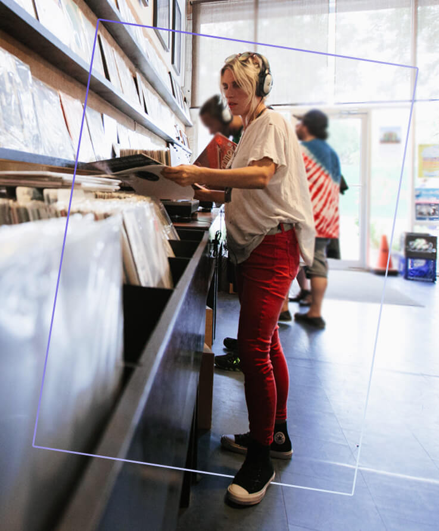
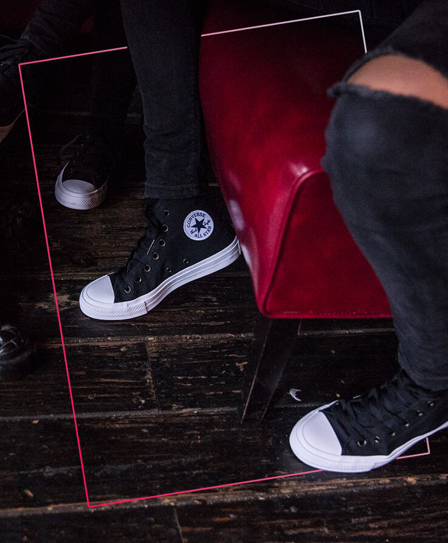
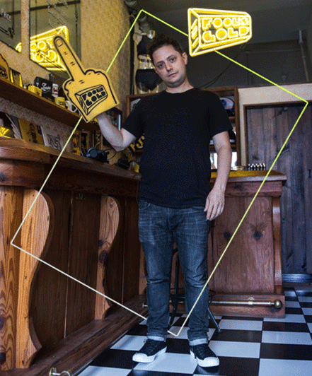

As they wander through the streets of Brooklyn, it’s pretty obvious that in their unofficial uniform of matching shoes and denim that they’re in a band, and one that isn’t messing around. (See their appropriately titled full-length Rips for evidence). When asked where the Washington, D.C. trio want to go next, they ask to be directed to the nearest record store which is a tradition for the group when they are on the road.
When we're together we'll usually fixate on similar things and get excited about one song and listen to it over and over,"
Wright says while they comb through racks of vinyl.
It’s nearly 8:30 as Ex Hex tucks away the equipment and gears up to watch a live show at notorious Brooklyn venue Baby's All Right. With its dark wood and low lighting, it’s the ideal spot for the trio to transition into the evening. The minute they walk through the door the girls kick up the heels of their Chuck II Shield Canvas’ knowing that hours of dancing and spilled drinks will not lead to a night of soggy shoes, thanks to the Lunarlon cushioning and water resistant shield canvas.

The music fades out, the crowd roars, and you can feel the air of nostalgia settle over the band. They shuffle out reminiscing on the show they performed there early on in their career.
Ex Hex end the night in Chinatown, sampling the Asian cuisine that has made this neon-illuminated neighborhood so iconic, finally sitting down after spending the day traversing the city. “You just have to be okay with telling people that you aren't super available a lot of the time,” Wright says when asked how the members of Ex Hex manage to balance their jobs, careers and personal life when they’re on the road so much.
“We had a joke on tour that every time we would pass a chicken factory or something like that we would say, ‘at least we don't work there,'" Harris chimes in, adding that as grueling as things can get on the road, Ex Hex are still thankful to be living their dream.
With that, the trio finish their dumplings, tighten their laces, and head back out into the night not knowing what other adventures will be awaiting them in the next city.
Everyone here has their own process


There aren’t any surprises. No one is bringing in a set of bagpipes or a harp or something. Everyone has this picture in their heads of four dudes in a garage getting together and making a classic record, but that’s not how it works. We can do great work separately because we trust each other.
From the calm backdrop of Milk and Roses they head to the East River Ferry where a light drizzle starts to fall. (Rain and waterways are a welcome reminder of home for the Vancouver-based rockers.) The ferry is rocking in the chop but after playing packed shows on grimy, sweat-stained stages all over the world, the bandmates have developed great balance. Those early tours were formative years for White Lung, and it created a special sort of trust between the members that comes through on Paradise. “We wanted to give everyone their space to work,” lead singer Mish Way told SPIN. “There isn’t a need to throw everything at each other, we trust each other to do good work and everyone has their part”
The band hops into a cab on Manhattan’s east side and speeds downtown along 2nd Avenue towards the East Village. The drizzle has turned into a downpour, but the foursome hops out of their cab and makes their way down neon-flanked St. Mark’s Place. They’re peeking into the Japanese restaurants lining the block and scoping out what has defined the New York punk territory for decades. “This is a break from our routine,” Way says, “and touring is all about routine. I’ve nailed down my vocal warm-ups so I can handle all 14 exercises in 15 minutes. A good show is all about being prepared.” But tonight they’re putting those drills on hold.
There’s no show and roaring crowd tonight, and the band is free to go wherever their feet will take them.
Right now, it’s an awesome time to be an artist. There’s more freedom, people are less concerned with boundaries and are welcoming other sounds because they want to make something unique.

The team at Fool’s Gold has swelled thanks to the success of artists like Run the Jewels and Chromeo, but Catchdubs is still buzzing around the office. Even after all of the success, Catchdubs maintains that humble mindset, that no job is too small as he heads down the stairs to the basement to check inventory. “We’re always busy working on label stuff but keeping the creative spirit alive here is so important,” he told SPIN.
Catchdubs ducks out of the Summer shower and into Sunshine Laundromat where he’s surrounded by the old-school kitsch of the dozens of vintage pinball machines lining the bar’s walls. “I’m starting to think of my music in visual terms,” he reveals. “I want to channel — like what would the X-Men jam be? What about the soundtrack to some vintage sci-fi? I want to get back that feeling I had when I was a kid reading comics.”
Catchdubs wraps up his last game and heads to the 5th floor of a nondescript office commercial building. This is the Space Pit, and it’s where Catchdubs has spent more late night hours than he can count. “This is where I can translate all those ideas into reality. Once I get in here it makes it all real.” He sits down, pops open his laptop, and takes a moment to breathe deep before diving back into work.
The best artists lead you down other roads, making music that drive you to discovery, leaving little artifacts, little beat breadcrumbs.